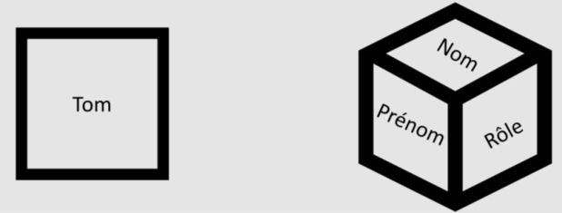
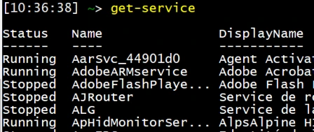
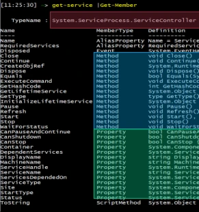
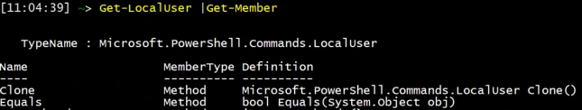
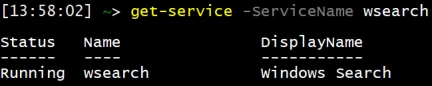
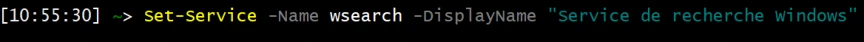
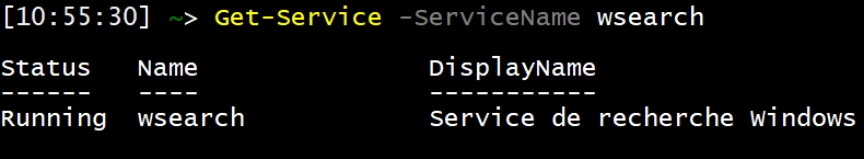
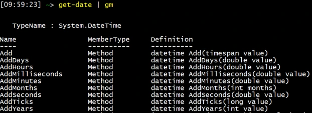
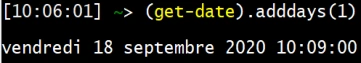
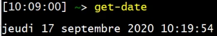

Transcription du support du Drive. Les formulations historiques et les exemples du document sont conservés. Les valeurs d’accès du laboratoire sont indiquées comme « fourni par le formateur ». Les adresses de messagerie personnelles utilisent example.com.
Module 02 – PowerShell : langage objet
Contrairement au Bash ou au CMD, PowerShell est un langage orienté objet. Exemple : on recherche l’utilisateur local « Tom » en CMD et avec PowerShell.
Tom Tom CMD PowerShell
Regardons la composition d’un objet PowerShell : • Un objet est défini par un ensemble de propriétés et de méthodes. • On peut comparer un objet PowerShell à un objet du quotidien. • Un feutre possède des propriétés et des méthodes.
| Propriétés | Méthodes |
|---|---|
| Marque, Couleur | Enlever le bouchon |
| Forme, Pointe | Écrire |
| Taille, Poids | Mettre le bouchon |

PS > Get-ServiceLa commande renvoie un objet « service Windows ».
| Propriétés | Méthodes |
|---|---|
| Nom du service | Démarrer le service |
| Type de démarrage | Désactiver le service |
| Statut du service | Arrêter le service |
PS> Get-MemberLa CMDLET est la commande qui permet de connaître :
Le type d’objet traité par la “CMDLET”
Les méthodes applicables à l’objet
Les propriétés connues de l’objet


PS > Get-MemberLa Cmdlet
PS > Get-Command
Get-Help
Get-Member
| Type de valeurs | Contenus acceptés |
|---|---|
| STRING « Chaîne de caractères Unicode » | De « a » à « Z » plus la ponctuation |
| INT « Integer » | De « -2 147 483 648 et 2 147 483 647 inclus. » |
| BOOL « Boolean » | « $FALSE » « $TRUE » « $NULL » |
| Array « Tableau » | Un tableau contient des valeurs facilement identifiables par un jeu de coordonnées. |
| Object « Objet » | Une propriété peut contenir un objet complet. |
Constitution d’un objet
OBJET
Propriété Propriété Propriété Propriété
Valeur Valeur Valeur Valeur
PS > Get-Service
-ServiceName
« Wsearch »| Typedevaleurs | Contenusacceptés |
| STRING«ChaînedecaractèresUnicode» | De«a»à«Z»pluslaponctuation |
| INT«Integer» | De « -2 147 483 648 et 2 147 483 647 inclus . » |
| BOOL«Boolean» | «$FALSE» «$TRUE» «$NULL» |
| Array«Tableau» | Untableaucontientdesvaleursfacilement identifiablesparunjeudecoordonnées . |
| Object«Objet» | Unepropriétépeutcontenirunobjetcomplet . |

PS > Get-Service –ServiceName «wsearch»

L’objet
«system.datetime»
peut être employé avec
plusieurs méthodes.PS > Get-DatePS > (Get-Date).AddDays(*)

